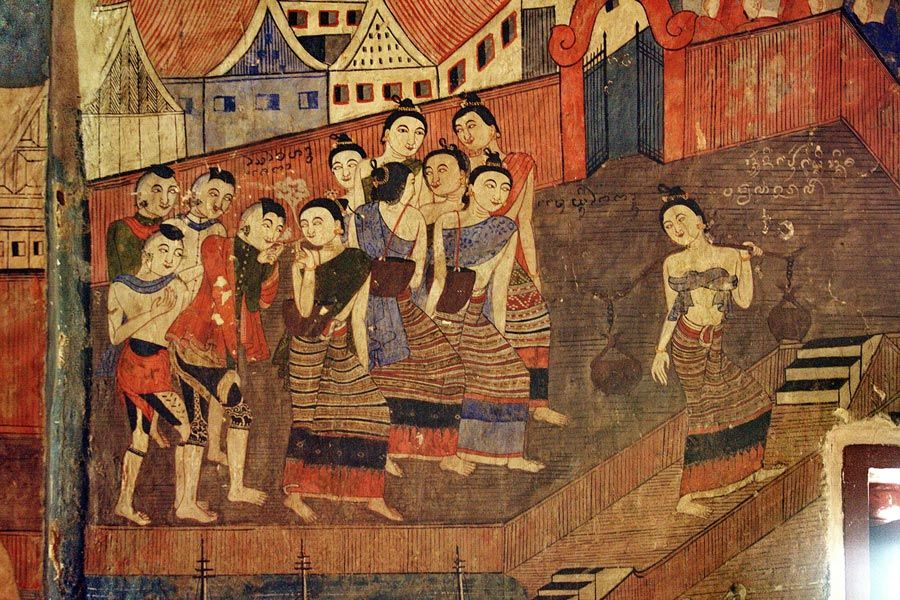

div> div>
ประวัติศาสตร์เมืองน่านเริ่มปรากฏขึ้นราว พ.ศ. 1825 ภายใต้การนำของพญาภูคาและนางพญาจำปาผู้เป็นชายา ซึ่งทั้งสองเป็นชาวเมืองเงินยาง
ได้เป็นแกนนำพาผู้คนอพยพมาตั้งศูนย์การปกครองอยู่ที่เมืองล่าง ต่อมาเพี้ยนเป็นเมืองย่าง (เชื่อกันว่าคือบริเวณริมฝั่งด้านใต้ของแม่น้ำย่างบริเวณตำบลศิลาเพชร
อำเภอปัว เลยไปถึงลำน้ำบั่ว ใกล้ทิวเขาดอยภูคาในเขตบ้านเสี้ยว บ้านทุ่งฆ้อง บ้านลอมกลาง ตำบลยม อำเภอท่าวังผา) เพราะปรากฏร่องรอยชุมชนในสภาพที่เป็นคูน้ำ
คันดิน และกำแพงเมืองซ้อนกันอยู่ เห็นชัดเจนที่สุดคือบริเวณข้างพระธาตุจอมพริกบ้านเสี้ยวมีกำแพงเมืองปรากฏอยู่ซึ่งเป็นปราการทิศใต้
และป้อมปราการทิศเหนือลักษณะที่ปรากฏเป็นสันกำแพงดินบนยอดดอยม่อนหลวง บ้านลอมกลาง เป็นกำแพงเมืองสูงถึง 3 ชั้น ในแต่ละชั้นกว้าง 3 เมตร สูง 5 เมตร
ขนานไปกับยอดดอยม่อนหลวง ต่อมาพระยาภูคา ได้ขยายอาณาเขตปกครองของตนออกไปให้กว้างขวางยิ่งขึ้น โดยส่งราชบุตรบุญธรรม 2 คนไปสร้างเมืองใหม่
โดยขุนนุ่นผู้พี่ไปสร้างเมืองจันทบุรี (เมืองพระบาง) และขุนฟองผู้น้องสร้างเมืองวรนครหรือเมืองปัว
ภายหลังขุนฟองถึงแก่พิราลัย เจ้าเก้าเถื่อนราชบุตรจึงได้ขึ้นครองเมืองปัวแทน
ด้านพญาภูคาครองเมืองย่างมานานและมีอายุมากขึ้น มีความประสงค์จะให้เจ้าเก้าเถื่อนผู้หลานมาครองเมืองย่างแทน จึงให้เสนาอำมาตย์ไปเชิญ
เจ้าเก้าเถื่อนเกรงใจปู่จึงยอมไปอยู่เมืองย่างและมอบให้ชายาคือนางพญาแม่ท้าวคำปินดูแลรักษาเมืองปัวแทน เมื่อพญาภูคาถึงแก่พิราลัย เจ้าเก้าเถื่อนจึงครองเมืองย่างแทน ในช่วงที่เมืองปัวว่างจากผู้นำ
เนื่องจากเจ้าเก้าเถื่อนไปครองเมืองย่างแทนปู่นั้น พญางำเมืองเจ้าผู้ครองเมืองพะเยา จึงได้ขยายอิทธิพลเข้าครอบครองบ้านเมืองในเขตเมืองน่านทั้งหมด นางพญาแม่เท้าคำปินพร้อมด้วยบุตรในครรภ์ได้หลบหนีไปอยู่บ้านห้วยแร้ง
จนคลอดได้บุตรชายชื่อว่าเจ้าขุนใส เติบใหญ่ได้เป็นขุนนางรับใช้พญางำเมืองจนเป็นที่โปรดปราน พญางำเมืองจึงสถาปนาให้เป็นเจ้าขุนใสยศ ครองเมืองปราด ภายหลังมีกำลังพลมากขึ้นจึงยกทัพมาต่อสู้จนหลุดพ้นจากอำนาจเมืองพะเยา
และได้รับการสถาปนาเป็นพญาผานอง ขึ้นครองเมืองปัวอย่างอิสระระหว่างปี 1865-1894 รวม 30 ปีจึงพิราลัย

สมัยล้านนา
ในปี พ.ศ. 1993 พระเจ้าติโลกราชกษัตริย์นครเชียงใหม่ มีความประสงค์จะครอบครองเมืองน่านและแหล่งเกลือบ่อมาง (เขตตำบลบ่อเกลือใต้ อำเภอบ่อเกลือปัจจุบัน)
ที่มีอย่างอุดมสมบูรณ์และหาได้ยากทางภาคเหนือ จึงได้จัดกองทัพเข้ายึดเมืองน่าน พญาอินต๊ะแก่นท้าวไม่อาจต้านทานได้จึงอพยพหนีไปอาศัยอยู่ที่เมืองเชลียง (ศรีสัชนาลัย)
เมืองน่านจึงถูกผนวกเข้าไว้ในอาณาจักรล้านนาตั้งแต่นั้นมา
ตลอดระยะเวลาเกือบ 100 ปีที่เมืองน่านอยู่ในครอบครองของอาณาจักรล้านนา ได้ค่อย ๆ ซึมซับเอาศิลปวัฒนธรรมของล้านนามาไว้ในวิถีชีวิต
โดยเฉพาะการรับเอาศิลปกรรมทางด้านศาสนา ปรากฏศิลปกรรมแบบล้านนาเข้ามาแทนที่ศิลปกรรมแบบสุโขทัยอย่างชัดเจน เช่น เจดีย์วัดพระธาตุแช่แห้ง เจดีย์วัดสวนตาล
(มวลสารจากวัดสวนตาลใช้ทำพระสมเด็จจิตรลดา) เจดีย์วัดพระธาตุช้างค้ำ แม้จะเหลือส่วนฐานที่มีช้างล้อมรอบซึ่งเป็นลักษณะศิลปะแบบสุโขทัยอยู่
แต่ส่วนองค์เจดีย์ขึ้นไปถึงส่วนยอดเปลี่ยนเป็นศิลปกรรมแบบล้านนาไปจนหมดสิ้น ในระหว่างปี พ.ศ. 2103-2328 เมืองน่านได้ตกเป็นเมืองขึ้นของพม่าอยู่หลายครั้งและต้องเป็นเมืองร้างไร้ผู้คนถึง
2 ครา คือ ครั้งแรก ปี พ.ศ. 2247-2249 ครั้งที่ 2 ปี พ.ศ. 2321-2344